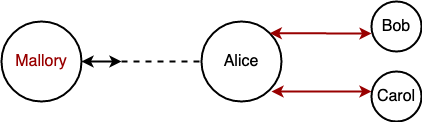
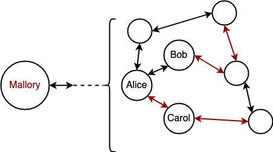
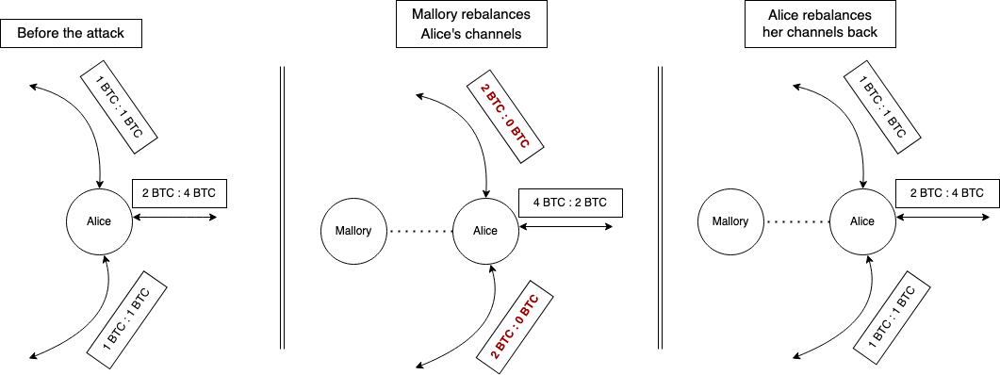
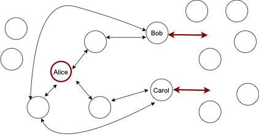
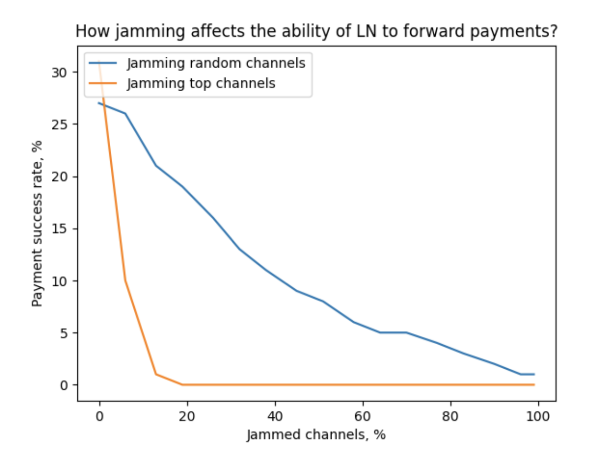
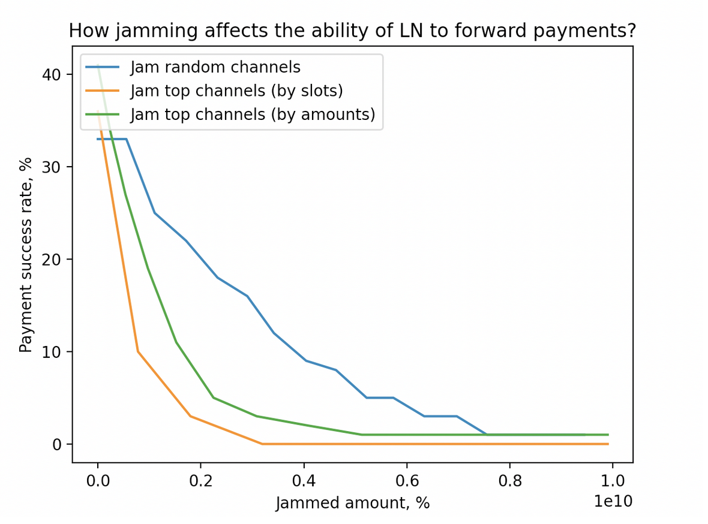
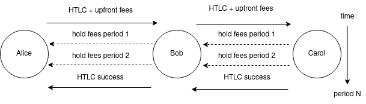
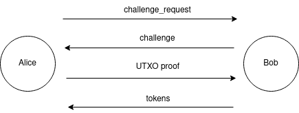
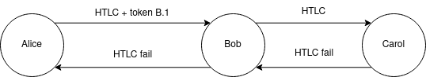

About
This website was created to summarize the latest state of solving Channel Jamming issue of the Lightning Network.
Here, we talk about the costs and impacts of jamming. We also explore the solution space, and discuss some concrete ideas: Stake Certificates and Forwarding Pass.
We assume some basic knowledge of channel jamming. Some general background can be found here: Preventing Channel Jamming.
Our goal was to align understanding of the problem and potential solutions across LN ecosystem actors, so that moving further becomes more productive.
You might find the content interesting while discussing about solving other spam issues (in LN or elsewhere), or stuff related to deploying DLC (and other "lengthy hold of funds" type protocols) in the LN.
Almost every chapter mentions open research problems, which could hopefully help someone to find a cool topic to work on.
Authors
The initial version was deployed by Antoine Riard (antoine@thelab31.xyz) and Gleb Naumenko (gleb@thelab31.xyz). Feel free to reach out.
This content was sponsored by NYDIG and ACINQ.
Resources
In our work, we relied on the prior research:
- t-bast/spam-prevention.md
- Discharged Payment Channels: Quantifying the Lightning Network’s Resilience to Topology-Based Attacks
- LockDown: Balance Availability Attack Against Lightning Network Channels
- Congestion Attacks in Payment Channel Networks
- Probing Channel Balances in the Lightning Network
- A Quantitative Analysis of Security, Anonymity and Scalability for the Lightning Network
- Analysis and Probing of Parallel Channels in the Lightning Network
For some of the experiments, we forked the ln-probing-simulator repo.
Contributing
We intend to update this website following open-source practices through the GitHub repo.
License
This website is released under the terms of the MIT license.
The impacts of channel jamming
Intro
Channel Jamming is often considered a big (and old known) issue to the Lightning Network. In this series of posts, we aim to advance channel jamming research.
We think better understanding the threat of jamming is important because it allows to:
- better allocate protocol development engineering resources based on the priorities;
- make a better decision in mitigating channel jamming (compare the solutions; make sure a solution is not an overkill, etc.)
In this post, we identify and measure the harm jamming could cause.
DoS
Channel Jamming attack is a type of Denial-of-Service, and the attacker’s goal is to disrupt victim’s operation efficiently.
In our work, we separately discuss targeting a single victim and harming the entire network. In Chapter 1, we discuss what an attacker may achieve in either case. In the Chapter 2, we will cover the attack costs.
The goal of a DoS attack is to prevent payments, either routed through the victim or paying the victim. The effectiveness of jamming thus could be characterized by the reduction of payment_success rate (either forwarding-related or acceptance-related), applied to the victim or the entire LN.
The focus of our work is observing how jamming could affect a victim's payment_success and finding ways to making it prohibitively expensive.
Targeted DoS
Jamming payments towards a single node (or a small set of nodes) could be relevant in the following scenarios:
- a competing routing node interested in forwarding more payments instead of the victim and taking the fees;
- a competing merchant preventing the victim from selling goods or providing services.

Mallory jammed the channel between Alice and Bob/Caroll, the merchant nodes, to prevent the buying of services between them.
We now discuss four concrete effects of jamming in more detail, none of which have an easy mitigation.
Blocking/Stealing routing fees
Lightning users run routing nodes to earn fees, and the amount they earn depends on the locked amount, their payment_success, and certain forwarding properties (historical success rate, fee strategy, CLTV delta, etc.). Reducing payment_success reduces the earned fees (linearly with the current state of scoring algorithms).
Currently, the harm jamming achieves is only bounded by the attacker’s resources. In other words, it is theoretically possible to block all fees.
At the same time, the fraction of the fees that could be stolen (by running parallel channels) is bounded by the external factors: e.g., routing algorithms used by payment senders.
Routing reputation loss
The BOLT specification allows payment senders to use arbitrary routing algorithms. Popular LN routing algorithms lean towards tracking the reputation of routing nodes based on the historic data (forwarding success rate), e.g in LDK. Jamming could cause the victim’s channels to get penalized in terms of reduced reputation.
Protocol flexibility and future uncertainty make it hard to predict concrete impact of DoS on these reputation systems in the future, especially considering that the attacks could also be adapted.
Disrupting business reputation
Jamming could prevent a victim from accepting payments, which results in short-term opportunity losses and long-term business reputation losses. The exact losses depend on many business-related factors. With the ongoing deployment of many LSP and specification of their services, operating business jamming-initiated disruption could become more concerning.
Exhausting watchtower credits
Watchtowers are likely to become an essential part of LN infrastructure supporting mobile clients, and thus watchtower credit would become an important resource. Frequently spamming victim’s channels (which is a special type of jamming) could quickly exhaust victim’s watchtower credits, since every state update could require a watchtower call and corresponding credit consumption.
Network-wide DoS
An attacker may jam the entire network with the goal of compromising the LN and drag protocol users to other payment protocols, including fiat.
Ultimately, this attack would split the network into N partitions, in which payments can’t flow from one to another, so that the overall payment_success for payments across partitions is reduced. These partitions could have either partial issues with communication, or being completely separated.

Mallory jammed the channels between the subnet Alice-Bob-Caroll and the rest of the network, therefore partitioning their ability to send payments across the subnets.
In the end, the LN could lose credibility both from the transactors (because they can’t buy/sell goods and services reliably), and from the routing nodes (because they can’t earn fees reliably).
We leave understanding whether a significant fraction of LN users would leave if network-wide payment_success goes down for further research. This could involve user surveys and observing real-world data (LN payment failure rate, channel closure mempool activity, on-chain payment increase, etc.), although the latter is complicated due to the privacy of the LN.
Network-wide channel closures
Apart from minimizing payment_success, an attacker might seek to trigger many channel closures in response to a long-lasting network DoS.
This may be motivated by the attacker’s will to earn higher fees (as a miner), as a part of a larger attack that involves massive channel closures (e.g., flood&loot), or simply for bringing additional inconvenience and costs to the LN users.
We are currently unaware of any LN implementations closing their payment channels in case jamming is detected or in case of significant payment success reduction, and we consider this scenario to be unlikely in the future. Combined with a social attack, however, this could pose more serious risks.
Probing
Probing attack allows inferring channel balances by making dummy payments and observing whether they were successfully routed over the target. Usually, probes use binary search and terminate when a given precision is achieved.
It was demonstrated that in many cases it is impossible to fully probe channels in the presence of parallel channels. This could be overcome by jamming these parallel channels leaving only one available, and then probing it (repeated for every channel).
Jamming could enhance probing both of a small set of targets and the entire network.
Conclusions
In this Chapter we overviewed different types of harm channel jamming could impose.
We highlight the risks for individual LN users (loosing fees, getting routing reputation reduced and inability to do business) and LN as a whole (compromising the credibility, consequences of massive channel closures or extended payment censorship). We also mention that for both cases deanonymization via probing becomes more feasible.
In the following Chapter, we aim to measure the costs an attacker may bear to achieve their goals in payment_success reduction and probing enhancements.
Channel jamming costs
Intro
In the previous chapter, we discussed the goals jamming may achieve. Now, we will look at the resources an attacker has to spend to achieve them; and how these resources could be minimized.
This is important to evaluate the feasibility of jamming attacks, as well as to evaluate the absolute efficiency of the potential solutions.
We make the following assumptions for simplicity:
- attacker’s channels are funded solely by the attacker (single-funded);
- when we say “a channel is jammed”, we mean that one direction of that channel can’t be used for payment forwarding (for discussing disabling in both directions, it’s usually sufficient to just multiply the costs by 2);
- attacker uses slot jamming, as it is currently significantly cheaper than amount jamming, which is covered in Chapter 3.
Jamming as a merchant
Our analysis generally assumes an attacker uses an anonymous fresh identity and thus has to open channels and issue payments. Alternatively, a malicious popular merchant employs its position to jam target channels by routing incoming payments through them (via the “route hints” feature) and then manipulating those payments. A similar risk could be studied in the context of trampoline nodes.
This alternative attack introduces a new trade-off: a malicious merchant sacrifices with buyers’ time to make a payment (including failed attempts), to attack the LN or particular nodes.
The cost/benefit analysis in these cases is different, as it would be focused on “how much of the personal reputation and economic gains an attacker is willing to sacrifice to make substantial harm to the competitors”. We leave studying these dynamics for future work.
Cost Aspects
Assuming an attacker already has available BTC capital, these funds have to be locked in LN payment channels. It boils down to two cost aspects: on-chain fees and opportunity cost. Let’s discuss both in more detail.
On-chain fees
Assuming the attacker is capable of batch-opening multiple channels in one transaction, the associated on-chain fees could be measured with the following formula:
f1: opening_cost(N) = (N * 34 + 122) vbytes * 1sat/vbyte = 34 * N + 122 (sats)
This calculation also assumes the minimal 1sat/vbyte feerate, which can be achieved by opening the channels while fees are lower. Consistently high feerates make the attack proportionally more expensive, thus making the system more secure against these attacks.
In our work, we assume low feerates in our further calculations, reflecting the current fee market.
Opportunity cost
Once channels are opened, the attacker has to dedicate the locked funds for jamming and keep them busy for the attack duration.
The lower bound for the locked amount per target channel is defined by the following factors (the largest of them):
htlc_minimum_msat * 483, so that one attacker’s channel is sufficient to jam all slots of one target channel (e.g.,1*483 = 483 satsin LND by default)- routing fees associated with forwarding jamming payments (e.g., 483 sats in LND by default with their basefee; the cost is higher if the jamming payment requires multiple hops)
- minimum channel capacity an honest node in the network would agree to while opening a channel (e.g., 20,000 sats in LND by default).
Given that the latter aspect is currently dominating, the opportunity cost could be measured as follows:
f2: opportunity_cost(N) = T * interest_rate * N * 20,000 (sats)
For example, given the monthly interest rate of 1%, owning one minimal attack channel would cost 200 sats a month, and it would allow jamming at least one channel for this period.
Now, let’s discuss how this could be optimized even further.
Cost optimizations and complications
Optimization: Looping
LN payment length is bound by implementation details, and we will refer to the maximum length as max_hops. Since this value is higher than the length an attacker usually needs to reach one target, an attacker can use one HTLC slot to lock multiple target slots. If the path is looped, an attacker can lock several slots of one channel.
For example, if max_hops=20, after dedicating 2 slots to the first and the last hop, an attacker could use the remaining 18 slots for the attack.
Optimization: rebalancing targets
Rebalancing the target channel is an honest activity that may achieve the same goals: reduce payment_success for paying over certain channels.

A straightforward rebalancing won’t be effective because a victim could rebalance back these channels as easily. In fact, some implementations already do this.
However, if a victim doesn’t rebalance back their channels immediately, an attacker may use this to reduce the attack cost.
For example in Figure 2, if Mallory rebalances Alice’s channels, she has to jam only one channel instead of three, which disables all of Alice’s channels while jamming only one.
Cost-wise, this optimization reduces the number of channel openings at the cost of routing rebalance payments.
Let’s now assume that every four channels could be emptied towards the fifth channel. Then, the cost could be computed with the following formula:
f3: rebalancing_cost(capacity) = capacity * percent_fee + base_fee
f4: cost_with_rebalancing(N, capacity) = opening_cost(N/5) + opportunity_cost(N/5) + rebalancing_cost(capacity)
It becomes apparent that this optimization makes sense when the opportunity for rebalancing is high enough to justify routing fees.
In any case, we believe that an attacker won’t apply this optimization because:
- the vast majority of LN nodes (potential targets) have fewer than three channels, making this optimization useless;
- for the remaining nodes, the optimization gives very little benefit while transaction fees are low (and it’s not even guaranteed to work).
We thus won’t apply this optimization for our further measurements, although it could be useful in the future where channel opening costs grow faster than routing fees.
Optimization: targeting the surroundings
Instead of jamming/rebalancing target channels directly, the attacker may identify the bottlenecks surrounding the target and jam/rebalance them.

Rebalancing the surroundings
Arguably, this scenario is even more harmful, because the victim would take longer to detect the attack, and applying some of the countermeasures may be more difficult. Similarly, this could be used to reduce the quality of the topology.
In any case, we leave particular estimates of this attack for future work, as it requires substantial research (especially w.r.t. route blinding).
Attack costs and gains
The cost of attacking a small set of nodes
If the attacker targets a routing node or a merchant, jamming their channels directly is the most efficient strategy.
These channels can’t be chained since they share a vertex. At best (for the attacker) they could be a part of three-hop circuits so that one attacker’s channel can jam 6 victim channels, assuming looping is used.
If we then assume most nodes/merchants have less than 6 channels, it would be sufficient for the attacker to have one channel to jam a victim entirely. In other words, the cost of jamming most of the routing nodes and victims is 156 sats (see f1) for opening and 200 sats/month in opportunity cost (see f2).
The most powerful routing nodes would have way more than 6 channels. According to 1ml.com data, nodes with the highest capacity usually have 200+ channels. Attacking 200 channels would cost 5200 sats and 6700 sats/month in opportunity cost.
For these well-connected nodes, rebalance-and-jam could be used to optimize these costs even further. However, given the already low cost of this attack, we omit this optimization in this case.
The cost of attacking the entire network
In this section, we estimate the cost of reducing the network-wide payment_success by jamming a large number of routing nodes. We use a small subset of s-tikhomirov/ln-probing-simulator features to model the network in the following way:
- network graph snapshot from our Core Lightning node, with channel balances assigned as random(0, capacity)
- 50% of the balance is not available (to model in-flight payment flow activity)
- every payment has a 10% chance to fail at every hop (to model failures unrelated to liquidity)
We model 100 payments from a source node (connected to 3 random well-connected nodes) towards random recipients over 10 shortest paths and observe payment_success. Then, we repeat the experiment with some channels jammed, according to two strategies: jamming random channels and jamming top channels (considering their location in the topology).

According to our measurements, advanced target selection allows making the network almost unusable by jamming 20% of the channels (~14,000 channels).
With the estimates above and looping, this would require between 14,000/6=2334 and 14,000 attacker’s channels. The cost would be between
- ~80,000 sats + 470,000 sats/month in opportunity cost
- ~480,000 sats + 2,820,000 sats/month in opportunity cost
Stealing the fees
The opportunities to steal routing fees fluctuate by many factors, which are difficult to evaluate comprehensively. It’s unlikely that stealing fees could be a sufficient goal for a long-term attack: an attacker becomes a target for the very same attack. However, stealing fees could indeed partially compensate the attack cost when the goal is different.
Considering the rapid evolvement of routing algorithms in the network, and the complexity of such experiment, we decided to not attempt measuring which fraction of fees could be stolen. We leave this question for future research.
Other gains
An attacker may use targeted jamming to hijack the purchases of goods and services. For example, if an attacker provides access to a VPN for Lightning payments, it could jam its competitors so that all consumers use the attacker's services. This applies to any substitute goods.
Miners could use jamming to attack the LN, so that users are forced to use on-chain payments, assuming they reasonably substitute off-chain payments. This could also apply to any alternative payment providers (cryptocurrency, fiat).
These kinds of gains should be evaluated on an individual basis. Unlike stealing fees, these likely could be a first-order goal of an attacker.
Conclusions
In this Chapter, we identified that the attack cost only depends on the number of targets, but not on their sizes. We measured the costs of attacking individual nodes of different sizes, as well as the network as whole in detail. We also noticed that successfully stealing routing fees could significantly reduce the attack cost.
Incremental solutions to channel jamming
Intro
In previous chapters, we demonstrated what can be achieved with jamming, and at what cost.
Now, we will overview some straightforward ideas for reducing the attack efficiency without significant protocol modifications (or even deployed by node operators individually).
More specifically, we focus on preventing slot jamming, which makes the attack so cheap. These solutions could presumably force an attacker to use amount jamming instead, which we demonstrate is more expensive.
Solution 1: JIT Transaction Staging
Slot jamming is possible because it is not secure for one channel to carry more than 483 in-flight HTLCs in a given direction, since exceeding it would make a commitment transaction too large and invalid.
Payment channel structure could be changed to bypass this bound by using a tree of commitments. Two-staged transaction construction would allow raising the HTLC limit to 483 * 483 = 233,289 slots.
On itself, this solution is not an improvement, because an attacker would get the same benefit as the victim. It could even make an attacker more advantageous, if they use this optimization while victims don’t.
However, this technique could enhance other Slot Bucketing defence, which we present later in this chapter.
This solution also comes with the following disadvantages:
- force-closing becomes 483 times more expensive (in the worst case)
- safety timelocks should be expanded considering that two transactions have to be confirmed (slightly reducing funds velocity)
- it requires substantial changes to the LN software critical subsystems (which were subject to funds-loss bugs previously)
Solution 2: Active defense
Once the jamming is detected, a victim could open more channels, so that their operations are not disrupted. While this could limit the harm w.r.t. merchant activities, opportunity losses in terms of the locked capital remain.
At the same time, nothing prevents an attacker from jamming these newly created channels, resulting in a liquidity competition between an attacker and a victim. If there is a capital asymmetry in favor of the attacker, this protection is inefficient.
Solution 3: Slot bucketing
The root cause of the slot jamming attacks is the limitation on the number of HTLC slots for payment forwarding on every channel, especially when all slots are “equal” in terms of the payment amount.
Splitting the payments into amount-based buckets so that jamming high-volume payments at least requires locking an adequate amount may improve on this issue. Lower buckets should be allowed for high-value payments, but not the way around.
Bucket structure
The jamming cost (of higher amount ranges) then becomes significantly higher, often to the point where it’s cheaper to apply amount jamming instead. The ultimate disadvantage of bucketing is a cheaper cost of attacking payments from the lower buckets because an attacker can apply slot jamming with fewer channels.
In this case, an efficient attack strategy would be slot jamming buckets one-by-one, starting with the lower buckets. This is equivalent to amount jamming several channels, capacity of which equals slots * lower_bound.
It remains debatable whether LN ecosystem should strive to support low-value payments at the cost of lower security of high-value payments. Low-value payments could be valuable for the public image (micropayments) and facilitate selling granular digital services (API requests, streaming data, etc.). Ultimately, this could be decided by every routing node.
We leave evaluating how this method works in practice for further research. The first iteration of this idea in Eclair could be used to provide initial insights.
Payments below dust and 0-bucket policy
A special cast of bucketing is handling below-dust HTLC values separately. Since these HTLCs could not be confirmed on-chain, applying the slot limits to them is meaningless in the first place. We advice routing nodes to keep a “0 bucket” not consuming slots from other payments.
By updating the measurements from the previous chapters, this method could easily increase the opportunity cost aspect of slot jamming (with looping) above-dust payments to:
opportunity_cost (N) = T * interest_rate * (N * 473 / 6) * dust_limit = T * interest_rate * N * 43043 (sats),
assuming the dust_limit=546 sats for simplicity (although it could be negotiated differently).
The size of “0 bucket” would be upper-bounded by two other parameters:
- ”how much a routing node can afford to lose from this HTLC forward risk”
- CPU/memory requirements to handle many in-flight HTLCs and prevent DoS
Targeted attack cost
Now, let’s discuss the attack costs once 0-bucketing and/or slot bucketing is implemented.
First, we need to evaluate the cost of amount jamming, as it will be involved in further calculations.
Amount jamming cost
The cost of opening N channels remains the same:
opening_cost = (N * 34 + 122) vbytes * 1sat/vbyte = 34 N + 122 (sats)
Notably, N for amount jamming would be lower, because an attacker is not limited by the 1-to-1 (or 1-to-20) attacker-victim ratio of HTLC slots.
The opportunity cost, in turn, could be computed as follows:
opportunity_cost = T * (base_amount + base_amount * routing_percent_fee * hops) * interest_rate
Since the percent_fee equals 0.032% (Arcane Research, page 19) and not accounting for the locking duration, the routing fee addendum can be dropped, and the opportunity cost could be reduced to the interest of using base_amount.
A highlight of these equations is that the opportunity cost component becomes a dominant factor, and the attack cost becomes mainly dependent on the target capacity.
Slot jamming 0-bucket vs. amount jamming
First, let’s see under which conditions just implementing a 0-bucket would make the cost higher than the amount jamming cost. We have to solve the following inequation.
slot_jamming_cost >= amount_jamming_cost ⇒
34 * N1 + 122 + T * interest_rate * N1 * 43044 > 34 * N2 + 122 + T * interest_rate * base_amount ⇒
34 * (N1 - N2) > T * interest_rate * (base_amount - N1 * 43044) ⇒
N1 - N2 > T * interest_rate * (base_amount - N1 * 43044) / 34
For example, if a single channel is targeted (N1=N2=1):
0 > T * interest_rate * (base_amount - 43044) / 34 ⇒
base_amount < 43044 (sats).
In other words, attacking one bucketed channel with less than 43044 sats makes amount jamming more efficient.
Alternatively, if 11 channels are targeted (N1 = 11, N2 = 1), and the attack length is one month (with 1% interest rate):
10 > 1 * 0.01 * (base_amount - 473484) / 35 ⇒
base_amount < 508484 (sats)
In other words, 11 channels together should accumulate for less than 500,000 sats to make amount jamming more efficient than slot jamming a 0-bucketed channel.
These examples demonstrate that for a large number of small/medium-capacity channels, the 0-bucket policy forces the attacker to use amount jamming.
The cost of slot jamming a bucketed channel
Let’s first assume three following optimizations are used:
- the victim uses JIT Transaction Staging to allocate extra 161 slot per bucket;
- the victim uses 0-bucket to increase the cost of attacking the first mentioned bucket (and we disregard below-dust payments for now);
- the attacker uses looping to reduce the cost by 9x.
The cost of attacking the channel in the figure above (according to the formula) would be:
- (disable payments) below 100,000 sats but above-dust:
546 (150 + 161) / 9 = 18,000 sats/month - (disable payments) below 1,000,000 sats:
100,000 * (150 + 161) / 9 = +3,455,555 sats/month - (disable payments) above 1,000,000 sats:
1,000,000 * (150 + 161) / 9 = +34,555,555 sats/month
We omit the general formula here because it is sophisticated and largely depends on the specific bucket organization. Instead, we attempt to build up the intuition based on this concrete example, which demonstrates that, ultimately, the attack cost with slot bucketing may be on par with amount jamming costs, if optimal bucketing is applied.
Network-wide attack cost
We repeated the experiment from Chapter 2, where we attempted to make LN payments fail by applying different jamming strategies and seeing how much liquidity an attacker has to commit (considering the model from previous section).

The most efficient strategy we implemented (top-by-amounts) allows for reducing payment_success from ~35% to 3% while locking the amount equal to 20% of the network public amount.
The attack cost thus could be computed as:
opportunity_cost = interest_rate * T * 0.2 * network_capacity
We do not consider stealing fees as a way to compensate for the attack in this case.
Assuming the 1% monthly interest rate and the current public capacity of 3000 BTC, it would cost 3.75 BTC/week to significantly reduce the throughput of the LN.
Conclusions
In this Chapter, we overviewed several incremental techniques to mitigate channel jamming, among which Slot Bucketing is the most promising.
Slot Bucketing increases the bar of jamming substantial amounts of the LN. This measure makes the cost of targeted attack on par with amount jamming cost, and attacking the entire network requires locking 20-30% of the network capacity. The disadvantage is making it even cheaper to jam low-value payments, which may raise substantial concerns.
0-bucket policy is a special case of this defense, achieving the same goal in a limited way, but without negative consequences.
In the next Chapters, we will overview other, more fundamental solutions, and see whether their deployment could be justified.
Chapter 4: Solution Design Space
Intro
In previous chapters, we suggested ways to increase the attack cost by forcing the attacker to lock a significant fraction of the amount under attack.
We will now discuss why these solutions are not satisfactory and suggest better alternatives, which although require substantial changes to the protocol.
Solution efficiency
A solution to channel jamming is efficient if it costs little for the victims, while making the attack cost substantially higher.
Both in the context of attacking individual nodes or the entire network, there are two ways to consider a solution satisfactory:
- Routing nodes suffering from the attack should be compensated in full liquidity interest rate (as valued by the routing nodes before the attack), paid by the attacker;
- Alternatively, for those solutions which don’t compensate the suffering routing nodes, the attack cost could be just so high** (substantially** higher than the liquidity interest rate) that an attacker won’t resort to the attack.
Neither of the incremental solutions proposed in Chapter 3 achieves these objectives.. Now, let’s discuss other ways to achieve them.
Design directions
The two solution options from the previous chapter could be re-formulated as follows:
- S1: Make lengthy hold of funds a prohibitively expensive attack;
- S2: Allow routing nodes to charge for lengthy hold of funds.
A whole separate design direction is network-level solutions, which don’t seem feasible to us at the moment, since it would either require substantial LN redesign.
We also don’t consider changing the structure of channels in this Chapter. We believe that the Chapter 3 overviewed (“JIT Transaction Stagging”) the best we can achieve in this direction.
We focus on the duration of the hold of funds, and not the time the payment takes, because focusing on the duration of an individual payment would just encourage an attacker to split jamming payments into many short-living ones.
We see two ways to enable S2:
- W1. Bonding the user to pay the fee at the payment initiating phase;
- W2. Incentivizing the user follow the rules (e.g., pay the fees afterwards) via a reward/punishment scheme.
Both W1 and W2 could be used to enable S1, if a corresponding routing node just sets the lengthy-hold fees prohibitively high.
Node-level protection vs. network-level protection
In the previous Chapters, we discussed how jamming could hurt individual nodes and LN as a whole. As for the defense protocols, it doesn’t make sense to distinguish the two.
We omit solutions which introduce a new coordination entity/protocol since they would result in significant centralization risks. The best we can do is enable routing nodes to protect themselves by giving them the right tool. Let’s overview some of them now.
LN culture: capital efficiency vs. financial access (DLC, Swaps, etc)
There is a family of non-malicious LN activities, which require lengthy (hours to weeks) holding of funds: DLC, swaps, etc. We will call them LHF (lengthy holding of funds).
Currently, the LN protocol is oblivious to LHF. Routing nodes can’t:
- distinguish them from regular fast payments;
- charge them based on the lock period;
- cancel them if they hold funds for too long.
We believe that the LN protocol will have to take them into consideration. Otherwise, the emerging LHFs not paying higher fees would force routing nodes to charge higher fees both from them and from small payments.
We think that handling LHFs is equivalent to solving the jamming issue: if the ecosystem decides that LHFs are undesired, they could seek solutions among S1 or S2. Otherwise, they should seek it among S2.
Now, we will overview more concrete design directions. We will cover both W1 and W2, remaining oblivious of the S1/S2 choice.
W1: bonding to a fee payment
Obliging a payment sender to pay for the lengthy payments could be done via:
- W1.1 a bond over the same payment channels
- W1.2 an on-chain Bitcoin smart contract (either pure or via oracles/third-parties)
- W1.3 third-party arbitrage
- W1.4 a smart contract on another blockchain
We believe that W1.1 should be prioritized and thoroughly explored, before proceeding to the latter ones, as the Lightning-only model makes the most sense in terms of threat model (better than W1.3 and W1.4) and convenience/efficiency (better than W1.2 and W1.4).
W1.1 Bonding the payer via the same payment channels
There are two ways to bond a payer to the fee obligations via the same channels:
- directly (guaranteeing the fees will be paid to every routing node);
- transitively (guaranteeing to pay to the first hop, which pays for the second hop, etc.).
We believe that the latter direction falls into the existing LN operation model much better, and implementing the former would require substantial changes to the LN operation (e.g., leaking payment privacy to every routing node).
Another aspect is the exact mechanism guaranteeing the fees are paid:
- either game-theoretical (everyone is incentivized to resolve the payment faster);
- or contract-based (e.g., pre-signed transactions unlocking more funds towards the routing node while time passes; or additional HTLCs dedicated at every hop).
The fee-based game-theoretical design space stemmed from the evolution of a naive upfront payment proposal summarized here, resulting in a hold-time-dependent bidirectional upfront payment schemes were proposed. We overview them and put them in the Chapter 5.
The contract-based design space is currently not well-explored, with a small exception for hashcash-based schemes.
W2: Incentivizing the rules via rewards/punishments
The most important part in designing a reward/punishment scheme is choosing the corresponding **resource. **In this case, a collateral and the right to route payments are two options that make most sense.
We leave finding a trust-minimized scheme for collateral burning for future work, and focus on the latter option instead.
Among the latter solutions, the mechanism of distributing those resources should be decided (e.g., they could be purchased). Purchasing, however, is equivalent to the straightforward upfront payment schemes, which were deemed to be flawed. Instead, we suggest assigning these rights based on the previous LN activity (e.g., previous payments).
This is effectively a reputation scheme consisting of two components:
- An identity (e.g., a dedicated private/public keypair, a proof of UTXO ownership, a PoW token, etc.)
- A reputation algorithm (how much is allocated initially; could it go to 0 and get the user banned; etc.)
While implementing this policy, the following trade-off should be considered: making it harder to obtain a reputation hurts both an attacker and honest user. We believe that a good reputation algorithm is a key answer to this trade-off.
An identity could be anonymized by proving ownership without revealing the item (e.g., a zero-knowledge proof of owning a UTXO). This works only for those identities, where a public list is available (not for PoW tokens).
A payer’s reputation could be either localized by every routing node or shared among many routing nodes (possibly, along with the proofs of malicious behavior).
We believe that the latter could hurt the payer’s anonymity, and requires a serious reliable infrastructure, which becomes an attack surface (both exploit-wise and regulatory-wise).
Now, let’s focus on the former.
W2.1 Local reputation
There are two fundamentally different ways to implement a locally-enforced reputation used to decide whether to forward payment or not: direct (looking at the payer) or transitive (looking at the previous hop, which would look at the previous hop, etc.).
We believe that trivial versions of the latter are prone to the attacker manipulations of the reputation between two honest nodes. We leave a thorough exploration of this direction for further research. For now, we focus on the former family of solutions.
Currently, routing nodes don't know who initiated the payment. Within a reputation protocol, every payment could be associated with an identity, either within the onion, or out-of-band.
Proving reputation ownership could be non-interactive (via one round of communication, a payer sends a proof to a routing node) or interactive (three rounds, a payer asks a routing node for a challenge, and then submits an associated proof). The latter makes selling the proofs on the secondary market harder but requires a more sophisticated implementation.
Reputation schemes may use “secondary assets” (e.g., reputation tokens) or just stick to the original identity proof.
Another important component of the reputation system is the reputation formula. Since it could be different at every routing node, it could be either derivable/asked by the payers at every routing node, or oblivious to payers.
In one of the following Chapters, we will discuss concrete reputation protocols in more detail.
Conclusions
We attempted to overview the design space of fundamental solutions to channel jamming. We believe this helps in better understanding all the alternatives, and making a better informed decision in the end.
Within this design space, we highlighted two most promising directions:
- bonding the payer to pay the fee via the same payment channels;
- forwarding payments based on the locally-tracked reputation on the payment sender.
We also suggested the directions which are currently under-explored.
In the following Chapters, we will discuss implementations of these promising directions.
Chapter 5: Hold-time-dependent bidirectional fee schemes
Intro
Hold-time-dependent bidirectional fee proposal resulted from an evolution of upfront payment schemes solving channel jamming.
This scheme bonds the payer to compensate routing nodes for the lengthy use of their capital while encouraging everyone to free the capital quickly. It is achieved by introducing a game-theoretic equilibrium based on the combination of two new types of fees.
In this Chapter, we briefly recall the protocol (thoroughly explained here), and then analyze it’s efficiency and other properties to put it in the context of the solution design space.
The protocol
Hold-time-dependent bidirectional fee protocol introduces two new types of fees and a grace period:
- upfront fees are paid at HTLC forwarding to the next hop, and assumed to cover locking funds of the routing hops within the _grace period _announced by the hops;
- hold fees are paid (periodically, based on ticks) to the previous hop after HTLC acceptance, and assumed to compensate for locking funds of the previous hops if the grace period is exceeded.
For simplicity, we assume that not paying hold fees in time immediately triggers a channel closure (could be achieved by a Service-Level Agreement between channel counterparties).

Alice pays Carol through Bob. The upfront fee is paid at sending `update_add_htlc`. Once the HTLC is committed at each hop, the hold fees start getting paid periodically. After accepting the HTLC, Carol suspends further hold fee payouts by finalizing the payment.
The combination of these two fees encourages routing nodes (and the payment recipient) to resolve the payment quickly.
Both fees somewhat rely on the goodwill of the participant:
- R1. if an upfront fee receiver closes the channel immediately after getting the fee, it gets away without bearing the cost of locking their funds;
- R2. if hold fees are not respected (e.g., hold fee payer does not honor payment; or a hold fee payee delays payment resolution to earn more fees), their supposed recipient could force-close the channel to minimize further uncompensated liquidity lockup.
R2 can take different forms: the last hop not paying the fee, or the left hop simulating offliness to inflate the hold fee paid by the right side, making it even harder to reason about the risks.
For quick payments (e.g., a small CLTV), this goodwill is on par with the risks every node already bears: after opening a channel and paying the fees, a counterparty could close it right away, burning the opener’s resources (opening/closure fee, capital locked up).
However, for longer payments (either intentional or accidental), the risks become more substantial. This is because if a routing node accepted an HTLC and wasn’t able to forward it further (due to a non-responsive next hop), it would either lose the value at force-closing or wait for the entire CLTV period.
Now, let’s discuss this in more detail.
Solution efficiency
Payment fees represent a conflict of interest between a payment sender (willing to pay fewer in upfront fees) and routing nodes (seeking for better guarantees), corresponding to the risks R1 and R2 above.
This type of solution is efficient if it:
- allows honest actors negotiate the conditions aligning their risks easily;
- makes it hard for an attacker (either jamming or another exploit) to succeed.
For example, risk-free routing operations, assumes a payer covering the entire liquidity lockup cost for the whole CLTV time in upfront fees to guarantee the safety of the first routing node, since hold-fees may not be reliable.
We will now discuss why this configuration may be infeasible.
Burden on honest users and asymmetry
Unfortunately, the requirement to pay a substantial amount upfront is risky for honest payment senders in the presence of malicious routing nodes (or in the presence of non-zero ratio of failed payments). Thus, the parties would often seek for another risk balance satisfying both (e.g., paying a fraction upfront).
It remains an open question whether this balance even could be found at all. If so, it would likely require an efficient reputation policy employed by routing nodes. E.g., if a certain payment sender has bad history of payments, it may be required to cover 100% in advance.
A reputation system could work in the opposite direction too: payment senders could assume that their trustworthy routing nodes would return a part of the upfront fee, if the payment is resolved quickly.
Discussion
Privacy
We believe that hold-time-dependent bidirectional upfront fees proposal does not hurt privacy in any way:
- adding new fee fields to the channel announcements does not hurt the privacy of routing nodes, as it is just another fee;
- adding new payment metadata (fees) reveal (almost?) no new information about the payment destination, path length, etc.;
- both passive and active external observers do not get any new information about the pending/resulting state change over the channel getting observed;
- on-chain observers do not get any new information from channel closures (although this depends on the way new fees are implemented).
Resource requirements
The protocol adds the following overhead to the LN node operation:
- new fees have to be gossiped within the channel updates, resulting in additional 8 bytes per message (4 bytes for every new fee component), which is a minor part of the overall bandwidth;
- payment senders carry the burden of accounting for new fees while constructing the payment onion (easy) and making optimal routing decisions (could be hard).
The onion size remains unchanged.
Compatibility
Although neither trampoline nor offline-receive protocols are finalized, we believe those solutions could be made compatible with them. However, it could result in slight capital-efficiency reduction due to decision delegation/deferral).
Conclusion
In this Chapter, we overviewed hold-time-dependent bidirectional upfront fee protocol and evaluated it.
We found out that using it would require finding a compromise between payment sender and routing nodes. We think that an efficient reputation policy may be a key requirement to making finding this compromise possible, especially in the world of lengthy payments. Although if the reputation approach is taken, the protocol presented in the next Chapter may be preferable.
We also concluded that this proposal does not hurt privacy of LN payments, does not add much overhead, and is compatible with discussed orthogonal routing proposals.
Chapter 6: The Reputation Scheme: Stake Certificates + Forwarding Pass
Intro
In this chapter, we discuss how a concrete reputation-based scheme could solve channel jamming. We propose a system based on Stake Certificates (an ID based on the zero-knowledge proof of UTXO ownership initially proposed on the mailing list) and Forwarding Pass (a reputation issuance protocol initially authored by @Roasbeef to the best of our knowledge).
Historically, these two protocols were proposed separately. Each focused on only one aspect, leaving another one ambiguous. We argue that they would strongly benefit from each other. After describing both, we will discuss the efficiency of the combined solution and put it in the broader context.
Stakes Certificates: an ID based on the Zero-Knowledge proof of UTXO
As we discussed in Chapter 4, the first component of a reputation system is an ID. Stake Certificates protocol suggests proving UTXO ownership in zero-knowledge for an ID in the following way:
- The UTXO is part of the UTXO set at a defined time and restricted by the filter provided by the verifier (e.g., UTXO amount, freshness, Script content, etc.);
- Prover knows the witness script of the UTXO;
- Prover can construct a valid witness for the witness script;
- A valid proof-of-UTXO ownership cannot be duplicated against the same prover.
Once a payer constructed a payment path, proofs for each routing hop may be constructed. The proof is linked to the routing node’s public key, to prevent proof reuse by thisrouting node.

Alice initiates the identity challenge request to Bob, the routing hop. Bob replies with a unique challenge to link the proof to a routing node secret (e.g the routing node’s private key). Alice generates a UTXO proof and sends to Bob, who verifies the correctness. If the proof is valid, Bob replied with reputation tokens. Communications can happen over onion messages channels or via other means. The exact number of rounds trips is function of the cryptosystems selected.
Historically, the Stakes Certificate system was proposed as a standalone solution to jamming. However, the reputation tracking part was always ambiguous. The most straightforward way to implement it would be to track reputation solely based on a concrete UTXO. This would, unfortunately, allow a routing node to correlate payments from the same proof. To improve on this, we propose to combine Stake Certificates with Forwarding Pass, which we will now describe.
Forwarding Pass: Reputation Tokens as Routing Credit Units
The second component of a reputation system is reputation algorithm. We suggest exchanging a proof-of-ID for a set of blinded tokens (used as credits for routing access) to make payments more private.
Historically, Forwarding Pass protocol was oblivious of the type of ID. We believe that linking it to a scarce resource could give routing nodes a useful tool within a reputation function. In the simplest case, they could just require basic proof-of-any-UTXO, which any LN sender can meet since they own a payment channel. More advanced policies could lead to better results. In the efficiency section, we will discuss why this is useful in more detail.
Routing a payment through a given routing node would require including a token issued by that routing node in the payment onion. If a token is not included or is invalid, a routing node would reject forwarding the payment.
A payment sender has to receive a separate set of tokens from every routing node according to the routing node issuance policy. The policy is gossiped across the network within channel updates. The policy could take the following factors into account:
- a value of one token (how much capital one token allows to lock);
- token expiration (either specified at issuance time for every token, or uniform);
- ID evaluation function: how many tokens are issued given certain properties associated with the ID (e.g., the value and the freshness of the UTXO);
Tokens should be initially exchanged between the HTLC senders and a routing hop on the payment path by leveraging onion communication channels. To preserve payment anonymity, the exchange should be achieved through the usage of blind signatures, where the token is blindly signed by the hop at the provision of a valid identity and unblinded by the HTLC sender.
Afterwards, a set of blinded tokens is provided at HTLC forward and, in case of success only, signed by the hop and exchanged during the HTLC settlement phase, in replacement of the consumed ones.
Alice pays Carol through Bob. Token B.1 obtained by Alice from Bob previously is attached within the “Bob’s” layer of Alice’s HTLC onion. Since Carol is a recipient, no token is sent to her. Upon successful resolution, a finalization message is propagated backward. Bob signes B.2, a new token for Alice, replacing B.1.

Alice pays Carol through Bob. Token B.1 obtained by Alice from Bob previously is attached within the “Bob’s” layer of Alice’s HTLC onion. Since Carol is a recipient, no token is sent to her. Upon failed resolution, a finalization message is propagated backward, without a new token.
The quality of a token issuance policy has a significant impact on the efficiency of this method against jamming.
Stake Certificates + Forwarding Pass
The efficiency of a jamming solution is measured as the cost (e.g., reputation) of locking the capital of the routing nodes. In Chapter 4, we discussed how the cost of attack either should equal the opportunity cost and compensate the victims; or, alternatively, not compensate the victims but be substantially higher than the opportunity cost.
Reputation systems combine the two: they encourage the former by threatening with the latter. Thus, the attack cost should be as high as possible.
This cost, however, has another bound: since it might be difficult to distinguish a jamming attack from an honest case, this burden will end up on the honest users as well. This trade-off could supposedly be solved by good reputation policies.
Now, we will discuss three ways of obtaining reputation, and how routing nodes can balance them to make it suitable for honest users while preventing jamming.
Grinding/buying a new identity with a base reputation
With Stake Certificates, the cost of obtaining a new identity with a base reputation fully depends on the reputation policy of a routing node.
First of all, routing nodes may or may not allow using channel funding UTXO (which every participant has) as an identity. Apart from that, the most straightforward case is buying a UTXO on the blockchain (e.g., an exchange), holding it for a certain time (as required by the policy), and then sell it.
The cost thus equals two transaction fees (to buy and to sell), and a potential loss due to the price difference between buying and selling, an exchange fee, and the opportunity cost of keeping the funds untouched. Given that the price difference is expected to be ~0 on average, and the on-chain fees could be optimized by low time preference, the opportunity cost is the major cost aspect.
A good protection means an attacker has to bear a substantially higher opportunity cost than the victim. Since the cost is the attacker’s opportunity cost, jamming X BTC over time T should require an attacker to lock X*A BTC (where A >> 1) over time T (or an equivalent), where A corresponds to the defence efficiency.
While a routing node indeed could enforce such a policy, it’s likely to be very unattractive for honest users. For example, if A=10, an DLC user would have to lock 10 BTC over a week before routing nodes agree to forward a DLC of 1 BTC over 2 hops.
Burden on honest users and asymmetry
There are two asymmetries between honest users and an attacker:
- One attacker’s UTXO can generate tokens at N routing nodes (assuming they don’t communicate). An honest user could be interested in only
M < < Nrouting nodes. - An attacker might use proofs/tokens secondary market, while we can’t assume honest users will.
These asymmetries have an unfortunate effect on the Stake Certificate value equilibrium: either the attack is too expensive, or the participation of an honest new user is too hard.
The asymmetry (1) could be solved as follows:
- allow bootstrapping of new honest users via some other means;
- pick a really efficient UTXO valuation policy to distinguish an attacker from honest users;
- information exchange between the routing nodes.
The asymmetry (2) could be, unfortunately, fundamental.
Grinding the actual reputation with honest activity
Let’s now assume an attacker wants to honestly grind reputation to attack the system later. This process is associated with paying routing fees towards the target routing node.
To be “fair”, the jamming based on this honestly earned reputation should get a routing node fully compensated for the attack in previously paid fees. It is acceptable if an attacker doesn’t compensate the victim, but bears a much higher attack cost instead.
In any case, here comes the asymmetry again: a reputation system should find a sweet spot between benefiting honest users while limiting the attacker. This sweet spot should allow routing nodes to get a realistic chance for full compensation for liquidity lockups overall via serving honest senders at a reasonable cost, and avoiding attackers.
We believe that in this case designing such reputation policy is possible.
Buying the actual reputation on a secondary market
Let’s now consider a secondary market for reputation, which is a matter of a good reputation policy: it should provide honest senders with just enough reputation for them, discouraging them from selling it on a secondary market.
However, some senders indeed would have more reputation than they need, and the secondary market could emerge. Similarly to buying a fresh reputation, we assume that an attacker might use this secondary market while honest users won’t.
Ultimately, the feasibility of this threat then depends on whether:
- a slack in reputation policy would be sufficient for a secondary market to develop;
- honest senders would refuse to sell on this secondary market, either by a cultural norm or due to the complexity;
- whether the secondary market solves the problem of double-spending routing tokens.
Discussion
Privacy
We believe that the protocol does not leak privacy by analyzing its every aspect:
- A zero-knowledge proof of UTXO ownership makes the verifier completely oblivious of which of the allowed UTXOs is used. Assuming an adequate anonymity set (allowed UTXOs), this prevents the verifier from associating a UTXO with the prover;
- Tokens issued for the same proof are not linkable, and thus, does not allow correlating payments with different tokens of the same proof;
- Reissuing a token on payment success or burning it on payment failure prevents payment correlation caused by token reuse;
- Ideally, payment senders should obtain tokens in advance, so that routing nodes can’t correlate the payments with proving;
- A newly gossiped data (reputation policy) could theoretically leak something about the activity of a routing node, however, this is already the case with existing channel announcement gossip.
Resource usage
We believe that the protocol does not increase LN resource requirements significantly:
- extra bandwidth associated with gossiping reputation policy and communicating tokens is minor;
- onions won’t increase in size much after including tokens;
- the load of tracking senders’ reputation is on par with current LN operation;
The burden associated with ZK proving and verification depends on the cryptosystem.
Compatibility
It remains an open question how this protocol would be combined with trampoline payments. The protocol is likely to be compatible with offline receiving schemes because payees are not involved in the protocol.
Conclusion
In this Chapter, we proposed a concrete reputation system for rate-limiting payments, to solve channel jamming. It is based on the combination of two existing ideas: Stake Certificates and Forwarding Pass.
The ultimate challenge is picking the reputation policy, which should be able to distinguish attackers from honest users.
This challenge applies both to the bootstrapping phase (generating a new ID) and grinding phase (earning the actual reputation).
Subjective Grand Conclusion
Here are our (Antoine's and Gleb's) personal thoughts on the subject.
We believe that Channel Jamming is a substantial risk to the LN, both against individual nodes and the network as a whole.
A good solution to jamming should either:
- guarantee the routing nodes could be compensated in full for locking their liquidity;
- or, otherwise, locking their liquidity should cost substantially more than the harm done.
The former approach also makes lengthy hold of funds (DLC, Swap protocols, etc.) feasible in the LN.
After overviewing known solution directions we identify the following matrix of solutions:
- Fees could be not charged at all (every lengthy lock implies a ban), be charged upfront (pessimistic), or charged afterwards (optimistic);
- Reputation ID may be based on a plain keypair or on Stake Certificates;
- Forwarding Pass may or may not be applied to introduce routing tokens.
Since every aspect adds susbtantial complexity to the system, we should make sure that improvements they bring are worth it. More specifically, we should evaluate:
- whether reputation-based approach could overcome the discussed asymmetries between an attacker and an honest user (for both SC and FP);
- whether FP could efficienlty balance the risks between payment sender/recipient and routing nodes;